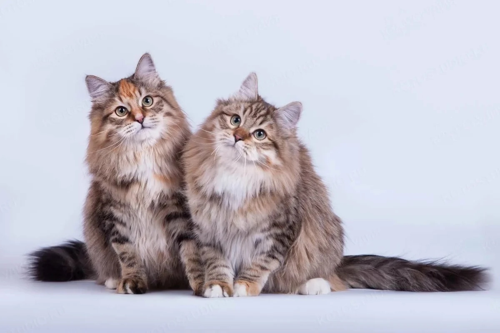
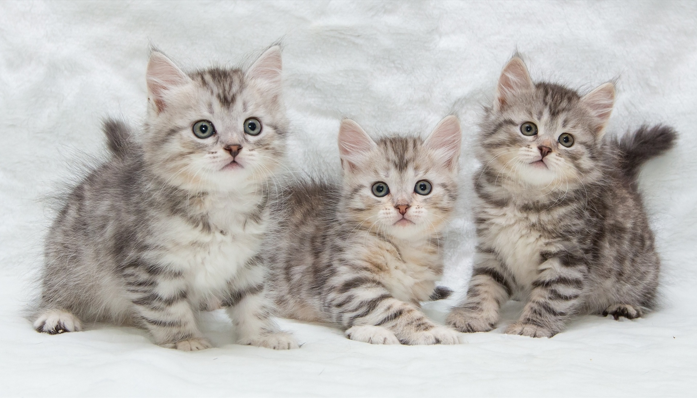
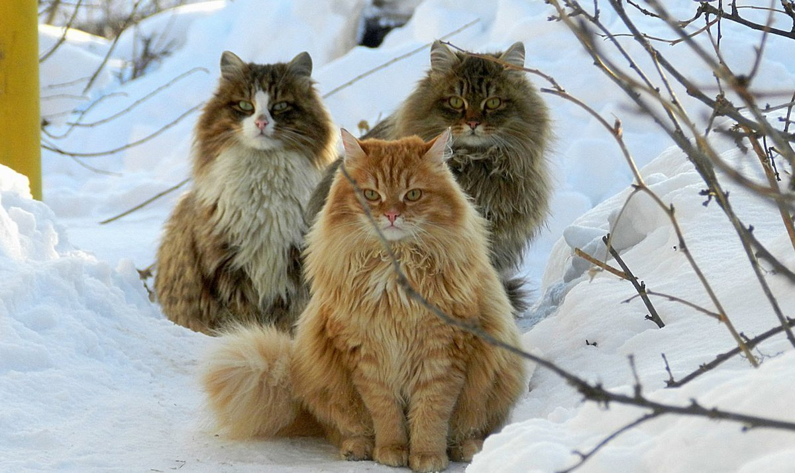

Сибирская кошка – популярнейшая в России порода, наделенная бесчисленными достоинствами,
главными из которых являются роскошная внешность,
великолепный характер, интеллект и преданность.
  
До конца прошлого столетия, пожалуй, ни один из владельцев сибиряка в нашей стране не задумывался о происхождении своего любимца, подразумевая как само собой разумеющееся, что предки животного родом из Сибири. Есть мнение, что дальними предками истинных сибиряков являются норвежские лесные кошки. Их могли завезти в Сибирь переселенцы из северных областей России во время освоения этой территории, начавшегося в XVI веке. К этому же периоду относятся и письменные упоминания о так называемых бухарских кошках – пушистых крепких животных, которых можно было встретить во всех регионах Российской империи, а не только в Сибири. Они предположительно попали в Россию вместе с купцами из среднеазиатских стран. Бухарских кошек часто называют родственниками сибиряков.
 Пятнистый окрас – в белый цвет окрашены или отдельные волоски на шее, груди или животе,
либо на шерстяном покрове присутствуют одно или несколько небольших белоснежных пятнышек; Биколор – в белый цвет окрашено от 1/3 до 2/3 шерстяного покрова животного,
в идеале белого цвета должны быть треугольник на мордочке от переносицы вниз,
грудка, живот, внутренняя часть конечностей; Арлекин – белый цвет распространяется на 2/3-5/6 шерстяного покрова, цветными остаются хвост,
небольшие пятнышки на голове, плечах, спине, бедрах; Ван – кошка практически вся белая, за исключением хвоста и двух пятен на голове за ушками.
Пятнистый окрас – в белый цвет окрашены или отдельные волоски на шее, груди или животе,
либо на шерстяном покрове присутствуют одно или несколько небольших белоснежных пятнышек; Биколор – в белый цвет окрашено от 1/3 до 2/3 шерстяного покрова животного,
в идеале белого цвета должны быть треугольник на мордочке от переносицы вниз,
грудка, живот, внутренняя часть конечностей; Арлекин – белый цвет распространяется на 2/3-5/6 шерстяного покрова, цветными остаются хвост,
небольшие пятнышки на голове, плечах, спине, бедрах; Ван – кошка практически вся белая, за исключением хвоста и двух пятен на голове за ушками.